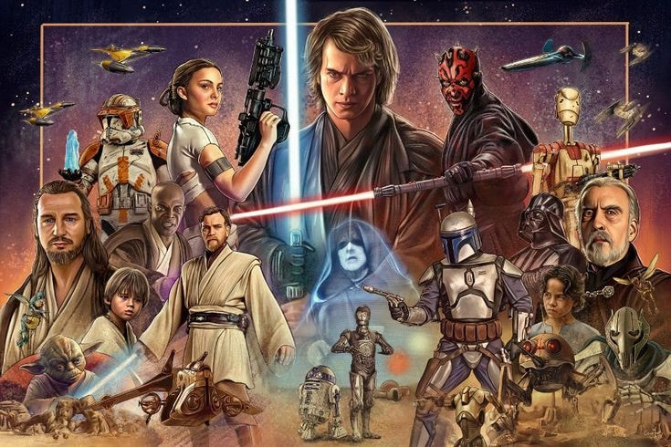
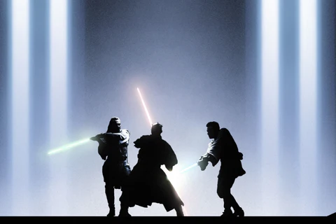
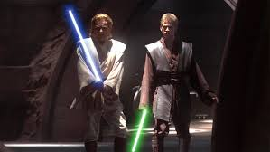

The Star Wars prequel trilogy, colloquially referred to as the prequels, is a series of epic space-opera films written and directed by George Lucas.The films follow the training of the powerful youth Anakin Skywalker as a Jedi under the tutelage of Jedi Masters Qui-Gon Jinn, Obi-Wan Kenobi and Yoda, his fall to the dark side of the Force and rebirth as Darth Vader. The trilogy also depicts the corruption of the Galactic Republic, the annihilation of the Jedi Order, and the rise of the Empire under Palpatine
| E1: The Phantom Menace | E2: The Attack of the Clones | E3: The Revenge of the Sith |
|---|---|---|
|  |  | |
| Jedi Qui-Gon Jinn and Obi-Wan Kenobi rescue Queen Amidala from Naboo’s invasion, discover Anakin Skywalker on Tatooine, and face Sith Darth Maul, hinting at the galaxy’s turmoil. | Anakin Skywalker and Padmé Amidala grow closer amid assassination attempts, Obi-Wan uncovers a secret clone army, and the galaxy spirals into war as the Sith manipulate events. | Anakin Skywalker succumbs to the dark side, becoming Darth Vader under Palpatine’s influence. The Jedi are betrayed, the Republic falls, and Padmé dies, birthing Luke and Leia. |
You were the chosen one! It was said that you would destroy the Sith, not join them! Bring balance to the Force, not leave it in darkness! You were my brother, Anakin! I loved you!
-Obi-Wan Kenobi
I don't like sand. It's coarse and rough and irritating and it gets everywhere- Anakin Skywalker
consoloe.log("bizzzureeeee") - R2D2
You are on this Council, but we do not grant you the rank of Master -Mace Windu